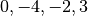

7.2. Bond¶
A Bond is an object that represent the legs of a tensor. It carries informations such as direction, dimension and quantum numbers (if with Symmetry).
There are in general two types of Bonds: directional and undirectional depending on whether the bond has direction (pointing inward to or outward from the tensor body) or not. The inward Bond is also defined as Ket type, and the outward Bond is defined as Bra type, which represent the Braket notation in the quantum mechanic:

Let’s introduce the complete API for constructing a Bond:
-
Bond(dim, bd_type, in_qnums, in_syms)¶ - Parameters
dim (int) – The dimension of the bond.
bd_type (bondType) – The type (direction) of the bond, can be BD.REG–undirectional, BD.Ket–inward, BD.Bra–outward.
in_qnums (List[List[int]]) – A size of dim List, each element is a List specifiy the quantum numbers for each dimension, the quantum numbers in this List correspond to the symmetries given in the next argument.
in_syms (List[Symmetry]) – A list of Symmetry objects, specifying the symmetries of the bond.
7.2.1. Symmetry object¶
In Cytnx we have the Symmetry as object, it mainly contains the name, type, combine rule and the reverse rule of that symmetry, let’s create a U1 symmetry and a Z_2 symmetry and print their info:
In python:
1 2 3 4 | sym_u1 = Symmetry.U1()
sym_z2 = Symmetry.Zn(2)
print(sym_u1)
print(sym_z2)
|
In c++:
1 2 3 4 5 | Symmetry sym_u1 = Symmetry::U1();
Symmetry sym_z2 = Symmetry::Zn(2);
cout << sym_u1 << endl;
cout << sym_z2 << endl;
|
Output >>
--------------------
[Symmetry]
type : Abelian, U1
combine rule : Q1 + Q2
reverse rule : Q*(-1)
--------------------
--------------------
[Symmetry]
type : Abelian, Z(2)
combine rule : (Q1 + Q2)%2
reverse rule : Q*(-1)
--------------------
7.2.2. Create the Bonds¶
Follow the API introduced above, here we show a example creating two U1 bonds, with quantum number 
In python:
1 2 3 4 5 | bd_sym_u1_a = Bond(4,BD_KET,[[0],[-4],[-2],[3]],[sym_u1])
bd_sym_u1_b = Bond(4,BD_KET,[[0],[-4],[-2],[3]]) #default is U1 symmetry
print(bd_sym_u1_a)
print(bd_sym_u1_b)
print(bd_sym_u1_a == bd_sym_u1_b, flush=True)
|
In c++:
1 2 3 4 5 | Bond bd_sym_u1_a = Bond(4,BD_KET,{{0},{-4},{-2},{3}},{sym_u1});
Bond bd_sym_u1_b = Bond(4,BD_KET,{{0},{-4},{-2},{3}}); // default is U1 symmetry
cout << bd_sym_u1_a << endl;
cout << bd_sym_u1_b << endl;
cout << (bd_sym_u1_a == bd_sym_u1_b) << endl;
|
Output >>
Dim = 4 |type: KET>
U1:: +0 -4 -2 +3
Dim = 4 |type: KET>
U1:: +0 -4 -2 +3
True
Let’s create another U1 bond bd_sym_u1_c, and conbine it with bd_sym_u1_a:
In python:
1 2 3 4 5 6 | bd_sym_u1_c = Bond(5,BD_KET,[[-1],[1],[2],[-2],[0]])
print(bd_sym_u1_a)
print(bd_sym_u1_c)
bd_sym_all = bd_sym_u1_a.combineBond(bd_sym_u1_c)
print(bd_sym_all)
|
In c++:
1 2 3 4 5 6 | Bond bd_sym_u1_c = Bond(5,BD_KET,{{-1},{1},{2},{-2},{0}});
cout << bd_sym_u1_a << endl;
cout << bd_sym_u1_c << endl;
Bond bd_sym_all = bd_sym_u1_a.combineBond(bd_sym_u1_c);
cout << bd_sym_all << endl;
|
Output >>
Dim = 4 |type: KET>
U1:: +0 -4 -2 +3
Dim = 5 |type: KET>
U1:: -1 +1 +2 -2 +0
Dim = 20 |type: KET>
U1:: -1 +1 +2 -2 +0 -5 -3 -2 -6 -4 -3 -1 +0 -4 -2 +2 +4 +5 +1 +3
Here we can observe the quantum numbers of bd_sym_u1_a combine with bd_sym_u1_c and generated 20 quantum numbers, respecting the combine rule (addition) of U1 symmetry.